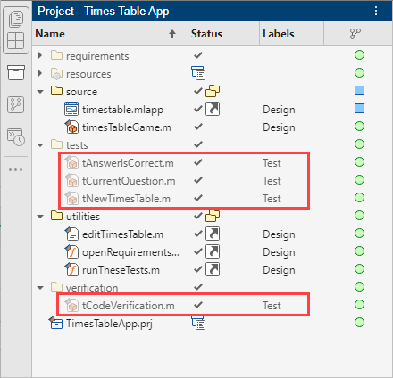

Identify and Run Tests in MATLAB Projects
MATLAB® projects provide tools to improve productivity, portability, collaboration, and maintainability of your MATLAB and Simulink® code. Testing is an important aspect of software development and maintenance. To ensure the reproducibility, reliability, and accuracy of your code, MATLAB projects helps you identify and run tests easily.
Label Test Files
To easily identify and group tests and create test suites, label your test files. When you
add test files to a MATLAB project, the project automatically associates the Test labels
with Simulink Test files (.mldatx) and class-based MATLAB unit tests.
Label other test files manually using the Test classification label.
Open your project by double-clicking the PRJ file.
In the Project panel or in the Dependency Analyzer graph, select and right-click the files, and then click Add Label.
From the list, select the
Testlabel and click OK.
Alternatively, add the Test label programmatically using the addLabel
function.
For projects under source control, the labels you add persist across file revisions.

Identify and Run All Tests in Project
Consider an example project that has only MATLAB class-based unit tests. To run multiple tests in the project, follow these steps.
In the Project panel, identify the test files using the
Testlabel in the Labels column.Multi-select the test files you want to run.
Right-click your selection and click Run Tests.
In large projects that have tests in different folders, use filtering to identify, group, and run all test files from the project interface.
To show only project files that have a
Testlabel, in the Project panel, right-click the white space and select Filter > Filter By Label > Classification > Test.A filter
 appears in the upper left corner of the Project panel.
appears in the upper left corner of the Project panel.Consider an example project that has only class-based MATLAB unit tests. To run all the tests in this example project, in the filtered project view, select all the test files. Then, right-click your selection and click Run Tests.

Alternatively, run all the tests that have the Test label in the
current project by using the runtests function.
proj = currentProject; runtests(proj.RootFolder)
Create Test Suite from Project Test Files
If you run tests frequently by using project shortcuts or custom tasks, or if you need to run tests in continuous integration (CI) pipelines, create a test suite and run tests programmatically.
To create a test suite from all files with the Test label in the opened
project and its referenced projects, use the testsuite function.
proj = currentProject; suite = testsuite(proj.RootFolder,IncludingReferencedProjects=true); results = run(suite)
results =
1×9 TestResult array with properties:
Name
Passed
Failed
Incomplete
Duration
Details
Totals:
9 Passed, 0 Failed, 0 Incomplete.
1.2533 seconds testing time.Run Impacted Tests to Reduce Qualification Runtime
For projects with a large number of tests, running all tests is often time consuming.
To reduce qualification run time locally or in CI jobs, run only the tests that are impacted by the changes you make to your project.
List modified files in the current project.
proj = currentProject; modifiedFiles = listModifiedFiles(proj);
The
listModifiedFilesfunction lists only local modifications. If you need the list of modified files between revision identifiers for CI workflows, for example, when you want to run tests after you merge your Git™ branch into themainbranch, use these commands instead.proj = currentProject; repo = gitrepo(proj.RootFolder); files = diffCommits(repo,"main","newBranch"); modifiedFiles = files(files.Status == "Modified",:).File;
Find all files that are impacted by the modified files in your project.
impactedFiles = listImpactedFiles(proj,modifiedFiles);
Tip
You can use the Dependency Analyzer to interactively identify and create a test suite from the tests you need to run to qualify your change. For more information, see Perform Impact Analysis with a Project (Simulink).
To reduce qualification time on local machines and CI servers, you can also share the dependency cache file. Using a prepopulated dependency cache file, you can perform an incremental impact analysis and cut down the runtime of a full impact analysis. For more information, see Reduce Test Runtime Using Dependency Cache and Impact Analysis.
Find all test files in your project.
testFiles = findFiles(proj,Label="Test");Find and run test files that are impacted by the modified project files.
impactedTests = intersect(testFiles,impactedFiles); runtests(impactedTests);
Alternatively, you can create a filtered test suite based on source code dependency by
using the matlabtest.selectors.DependsOn class. For an example, see Select Tests That Depend on Modified Files in Project (MATLAB Test).
See Also
Apps
Functions
addLabel|findFile|runtests|run (TestSuite)|testsuite|diffCommits|listModifiedFiles|listImpactedFiles